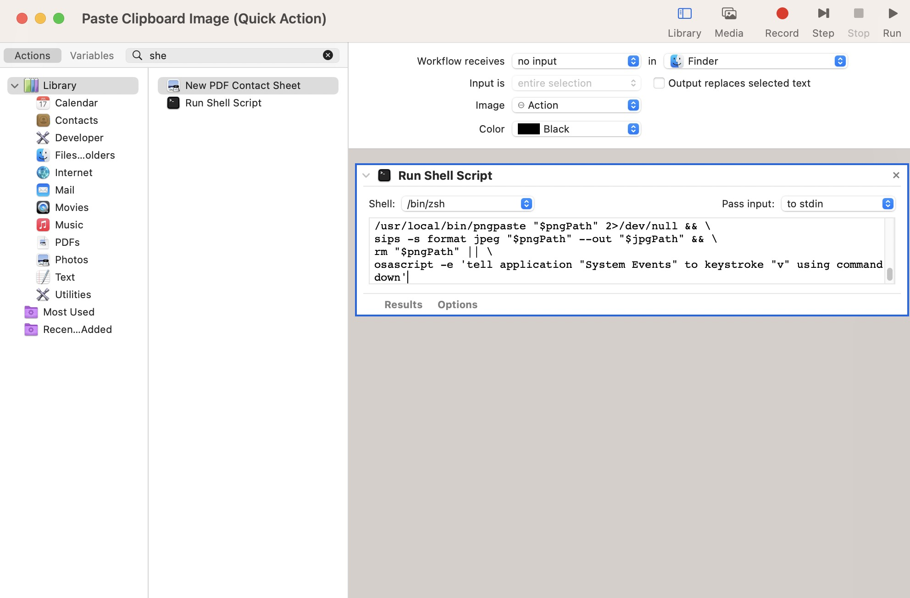
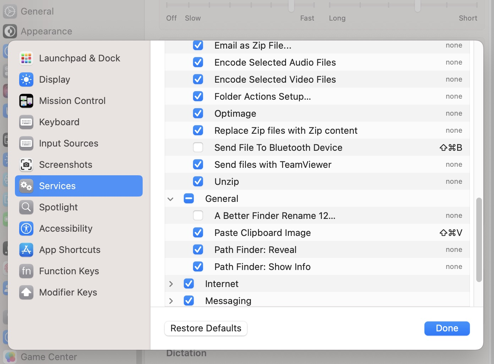

Hướng Dẫn Paste Hình Ảnh Từ Clipboard Trực Tiếp Vào Folder Finder Trên macOS (Intel Mac)
Mục tiêu: Sau khi copy hình ảnh từ web (chuột phải → Copy Image), bạn chỉ cần mở Finder đến thư mục mong muốn và nhấn một phím tắt → hình ảnh tự động lưu thành file ngay trong thư mục đó, không cần Preview, không dialog Save, không chọn vị trí.
Yêu cầu:
- Mac Intel (không phải Apple Silicon M1/M2/M3/M4)
- macOS Ventura trở lên (đã test tốt trên Sonoma & Sequoia)
- Homebrew + pngpaste (chỉ cài 1 lần)
Bước 1: Cài Homebrew và pngpaste (chỉ làm 1 lần)
- Mở Terminal (Spotlight → gõ Terminal).
- Cài Homebrew (nếu chưa có):
/bin/bash -c "$(curl -fsSL https://raw.githubusercontent.com/Homebrew/install/HEAD/install.sh)"→ Nhập mật khẩu Mac khi yêu cầu, chờ 1-3 phút.
- Cài pngpaste:
brew install pngpaste - Kiểm tra path (phải trả về
/usr/local/bin/pngpaste):which pngpaste
Bước 2: Tạo Quick Action trong Automator
- Mở Automator (Spotlight → Automator).
- Chọn New Document → Quick Action → Choose.
- Cài đặt phía trên:
- Workflow receives: no input
- in: Finder.app
- Bên trái tìm Run Shell Script → kéo sang bên phải.
- Cài đặt Run Shell Script:
- Shell: /bin/zsh
- Pass input: as arguments
- Xóa hết nội dung mặc định, paste đoạn script sau:
# Tạo tên file theo thời gian để tránh trùng formattedDate=$(date +'%Y-%m-%d_%H-%M-%S') # Lấy thư mục hiện tại của Finder (nếu không có cửa sổ mở → dùng Desktop) if [ $(osascript -e 'tell application "Finder" to count windows') -gt 0 ]; then currentFolder=$(osascript -e 'tell application "Finder" to POSIX path of (insertion location as alias)') else currentFolder="$HOME/Desktop/" fi # Đường dẫn file đầy đủ filePath="${currentFolder}${formattedDate}.png" # Lưu hình từ clipboard, nếu thất bại thì paste bình thường (text/file) if /usr/local/bin/pngpaste "$filePath" 2>/dev/null; then : else osascript -e 'tell application "System Events" to keystroke "v" using command down' fi - File → Save → Đặt tên: Paste Clipboard Image (hoặc tên dễ nhớ).

Cấu hình Run Shell Script trong Automator
Bước 3: Gán phím tắt
- Vào System Settings → Keyboard → Keyboard Shortcuts…
- Bên trái chọn Services (hoặc App Shortcuts ở phiên bản cũ).
- Cuộn xuống phần General → tìm Paste Clipboard Image (tên bạn vừa đặt).
- Click vào → gán phím tắt, gợi ý:
- ⌘ + Shift + V (phổ biến nhất)
- hoặc Control + ⌘ + V
- hoặc Option + ⌘ + V

Gán phím tắt cho Quick Action
Cách sử dụng hàng ngày (siêu nhanh)
- Trên trình duyệt: chuột phải vào hình → Copy Image (hoặc Copy).
- Mở Finder → đi đến thư mục muốn lưu (Desktop, Downloads, Pictures…).
- Nhấn phím tắt bạn đã gán (ví dụ ⌘ + Shift + V).
- → File PNG xuất hiện ngay lập tức trong thư mục, tên kiểu
2026-01-03_15-30-45.png.
Tùy chọn: Lưu thành JPG thay vì PNG (file nhỏ hơn)
Nếu muốn file JPG, thay toàn bộ script ở Bước 2 bằng đoạn này:
formattedDate=$(date +'%Y-%m-%d_%H-%M-%S')
if [ $(osascript -e 'tell application "Finder" to count windows') -gt 0 ]; then
currentFolder=$(osascript -e 'tell application "Finder" to POSIX path of (insertion location as alias)')
else
currentFolder="$HOME/Desktop/"
fi
pngPath="${currentFolder}${formattedDate}.png"
jpgPath="${currentFolder}${formattedDate}.jpg"
/usr/local/bin/pngpaste "$pngPath" 2>/dev/null && \
sips -s format jpeg "$pngPath" --out "$jpgPath" && \
rm "$pngPath" || \
osascript -e 'tell application "System Events" to keystroke "v" using command down'